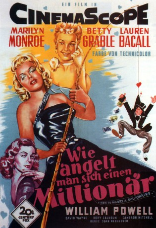
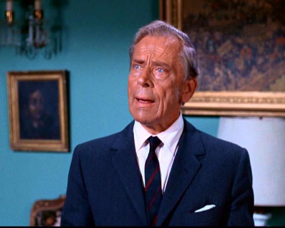

#1811 Wie angelt man sich einen Millionär
Alternativ: How to Marry a Millionaire
Auszeichnungen: für 1 Oscars nominiert
 
 IMDB-Wertung: 7.0 / 10
IMDB-Wertung: 7.0 / 10  Metascore: 0
Metascore: 0 
Den drei New Yorker Mannequins Pola (Marilyn Monroe), Tütü (Betty Grabel) und Tschicki (Lauren Bacall) ist glanzvoller Reichtum wichtiger als die wahre Liebe. Also kratzen sie ihr Erspartes zusammen, mieten sich ein luxuriöses Apartment und hoffen, damit schnell heiratsfähige Männer mit dicker Brieftasche anzulocken. Bald wird das Geld knapp, denn die Wohnung ist teuer und die Millionäre wollen einfach nicht anbeißen. Stattdessen verlieben sich die drei Models in einfache Kerle, die so gar nicht ihren ursprünglichen Vorstellungen entsprechen. Während Polas Eroberung nicht nur nicht reich, sondern sogar auf der Flucht vor dem Finanzamt ist, stellt sich Tütüs Traummann nicht als Besitzer eines Waldstücks heraus, sondern lediglich als Hüter eben jenes Waldes. Nur Tschicki gelingt es tatsächlich einen Millionär an die Angel zu kriegen. Dumm nur, dass sie sich währenddessen in den scheinbar mittellosen Tom Brookman (Cameron Mitchell) verliebt...
Jahr: 1953
Dauer: 95 Minuten
FSK: 12
Land: USA Studio: Twentieth Century-Fox Film Corporation.Tonspuren: DTS - ,
Untertitel: Deutsch,
Auflösung: 1080p (1920x752) Größe: 7833 MB
Genre: Komödie, Drama, Liebe
Regisseur: Jean Negulesco
Drehbuch: Nunnally Johnson, Zoe Akins, Dale Eunson, Katherine Albert
Soundtrack: Cyril J. Mockridge
Darsteller:
- Betty Grable als Loco Dempsey
 Marilyn Monroe als Pola Debevoise
Marilyn Monroe als Pola Debevoise Lauren Bacall als Schatze Page
Lauren Bacall als Schatze Page- David Wayne als Freddie Denmark
 Rory Calhoun als Eben
Rory Calhoun als Eben Cameron Mitchell als Tom Brookman
Cameron Mitchell als Tom Brookman- Fred Clark als Waldo Brewster
- William Powell als J.D. Hanley
- Harry James als Radio Trumpeter , uncredited
 Barry Norton als Plane Passenger , uncredited
Barry Norton als Plane Passenger , uncredited- Alexander D'Arcy als J. Stewart Merrill
 Merry Anders als Model , uncredited
Merry Anders als Model , uncredited- Jan Arvan als Tony , uncredited
- Charlotte Austin als Model , uncredited
- Benny Burt als Reporter , uncredited
 Harry Carter als Elevator Operator , uncredited
Harry Carter als Elevator Operator , uncredited- Jack Chefe als Waiter at Wedding , uncredited
- Oliver Cross als Restaurant Patron , uncredited
- Herbert Deans als Steward , uncredited
- Van Des Autels als Best Man , uncredited
- George Dunn als Mike - Elevator Operator , uncredited
- Elaine DuPont als Undetermined Role , uncredited
- Eve Finnell als Stewardess , uncredited
- Ivis Goulding als Maid , uncredited
- Tom Greenway als Motorcycle Cop , uncredited
- Ruth Hall als Model , uncredited
 Percy Helton als Mr. Benton , uncredited
Percy Helton als Mr. Benton , uncredited- Hope Landin als Mrs. Salem , uncredited
- Jane Liddell als Model , uncredited
- Dayton Lummis als Justice of the Peace , uncredited
- Rankin Mansfield als Bennett , uncredited
 Maurice Marsac als Mr. Antoine , uncredited
Maurice Marsac als Mr. Antoine , uncredited- Thomas Martin als Pete - the Doorman , uncredited
- Beryl McCutcheon als Model , uncredited
 Harold Miller als Wedding Guest , uncredited
Harold Miller als Wedding Guest , uncredited- Alfred Newman als Orchestra Conductor in Prologue , uncredited
 Tudor Owen als Mr. Otis , uncredited
Tudor Owen als Mr. Otis , uncredited- Ralph Reed als Jewelry Salesman , uncredited
- George Saurel als Emir , uncredited
- Richard Shackleton als Bellboy , uncredited
- Hermine Sterler als Madame , uncredited
- James Stone als Doorman , uncredited
- Lida Thomas als Model , uncredited
-  Ivan Triesault als Phillip - Captain of Waiters , uncredited
- Tyra Vaughn als Model , uncredited
- Emmett Vogan als Man at George Washington Bridge , uncredited
- Eric Wilton als Butler , uncredited
Datei: X:\1950-1959\Wie angelt man sich einen Millionär (1953, FSK12, 1920x752).mkv seit 25.08.2015
Festplatte: HD 1900-1970
 Es gibt insgesamt 141 Filme in der Gruppe '1950-1959'
Es gibt insgesamt 141 Filme in der Gruppe '1950-1959'